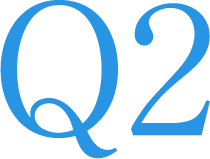

北陸の豊富な水源を利用した水力発電所や太陽光・風力を利用した太陽光発電・風力発電は、二酸化炭素を排出しない自然エネルギーとして地球温暖化防止に重要な役割を担っています。
再生可能エネルギー部門の主な業務は、電気設備（水車・発電機、変圧器など）や土木設備（ダム・導水路など）の運用、設備事故トラブルの未然防止を図るための設備点検・診断など行う保守管理、設備の機能維持・改善を図る工事設計・管理など、電気・電子、機械、土木の多種多様な専門知識を持った社員が相互に連携を取りながら業務を行っています。
水力発電では、設備の診断技術・延命化技術など最新技術の開発・導入に取り組むとともに、貴重な自然エネルギーをさらに有効活用するため、発電効率の向上による発電出力・電力量の増加に取り組んでいます。今後、高度な維持管理を目指してICT、AI、ロボット技術の活用による設備メンテナンス業務をよりスマート化する取り組みを進めていきます。
また、再エネ導入拡大に向けた取組みを更に加速させるため、風力発電を初めとする再エネ開発・検討を進めている他，海外への事業進出についても積極的に検討を行っています。
再生可能エネルギー部 水力電気チーム坂井 幸円
入社 / 2000年
電気情報工学科卒業
2016年7月 土木部 水力室 水力電気チーム（現: 水力部水力電気チーム） 副課長
2018年7月 魚津水力センター（現: 新川水力センター） 発電工事課 課長
2020年9月 再生可能エネルギー部 水力電気チーム 課長代理
経歴は取材時点のものです
歩んできたキャリアは？
学生時代に訪れた発電所で、最新鋭技術を駆使した電力設備が電気を生み出す姿に圧倒されたのが、電力の世界を志した契機でした。入社後は北陸電力の象徴でもある水力発電技術者としての道を歩み、多数の水力発電所において点検、設備工事を担当。現場での経験のみならず、水力発電設備の新設・改修計画策定、発電所の譲渡・廃止方針策定、業務統合、電力システム改革対応など水力発電事業の運営全般にも関わってきました。クリーンエネルギー推進の中心的役割を担う水力発電の維持、発展に貢献できるようこれからも進み続けます。
現在の仕事、
プロとして意識していることは？
北陸電力は、峻険な地形と豊かな水資源を活用した水力発電所を131箇所所有し、水力発電比率は全国トップとなっています。私は水力発電所の設備修繕計画とともに、必要な人員配置や教育研修など部門の運営計画を主に担っています。大切にしているのは、将来を見据え、長期スパンで評価すること、そして、再生可能エネルギー部門のみならず会社全体の目線で考えること。事業環境が刻々と変化する中、変化の大筋を捉え、より多角的で柔軟な判断を行うことが必要です。それがこれからのエネルギーミックスの基盤となり、北陸電力の独自性にもつながるはずです。再生可能エネルギー部門の成長が低炭素社会実現の支えになる、そのような思いで日々邁進しています。
 これから挑みたいことは？
これから挑みたいことは？
電力の安定供給という使命は変わりませんが、計画を着実に実行するだけでは大きな成長は見込めません。技術者一人ひとりが自ら考え、変化を恐れず挑戦を重ね続ける組織こそ理想の姿だと思っています。これまでに私たちはさまざまなタイプの水車や自社開発の緊急予備力発動装置・一体型制御装置の採用など、他社に先駆けて新たなものを取り入れてきました。これからも既存設備の発電効率向上をはじめ、AIによるダム運用改善やIoT・ドローン導入など、新技術を活用してできることはまだまだあるはずです。水力発電は先輩方から脈々と受け継がれ、後世に残さなくてはいけない資産、私たちはそれをさらに進化させていくスタート地点にいると考えています。
 学生へメッセージを
学生へメッセージを
これからの業務は、私の入社時よりも幅広くかつ複雑なものに変わっていくはずです。しかし、このような状況だからこそ自分自身の能力をより発揮できるチャンスです。未知の分野に巡り合うことも多いと思いますが、何事も積極的に、そして困難に立ち向かう姿勢があれば、解決の道は拓けると信じています。希望溢れる未来をみなさんとともに歩めることを願っております。

水力発電所トラブル対応
通常は本店で勤務していますが、トラブルの初報を受けた際、概要を把握のうえ現地出動することもあります。必要な資機材や人員・施工者の手配を進め、トラブル対応に向けた体制を確立します。
部門計画の概要説明
当年度の実績を踏まえ、次年度の再生可能エネルギー部門計画を策定、実施に向けた取り組みを進行していきます。生産性向上に向けた事業体制構築の仕組みなどを広く理解してもらうため概要説明を実施しています。
設備修繕計画策定のヒアリング
部門計画や法令に基づき策定された予算編成方針をもとに、設備修繕計画を策定するのも私の役割です。各水力センターに出向きヒアリングを実施したうえで、全体計画をまとめていきます。
電力システム改革対応
電力システム改革に伴い、全発電所に発電所メーター設置が必要となり、設置場所や機器仕様、実施時期を確認し、最適な計画となるよう検討を進めています。送配電会社、施工者、メーカーとも綿密に調整を進め、確実な計画の実施を目指します。
常願寺水力センター 発電工事課由川 裕太
入社 / 2017年
総合科学技術研究科 工学専攻 電気電子工学コース修了
現在に至るまでの経歴
2017年7月 神通電力部 発変電保守課
2018年7月 神通水力センター 発電保守課
2020年4月 常願寺水力センター 発電工事課
経歴は取材時点のものです
 入社動機は？
入社動機は？
小学生の時、大量の水を溜め込み放水するダムのスケール感に衝撃を受けました。そのような水力発電に興味を抱いた私は、将来、水力に関わる仕事に就きたいと考え、大学で電気電子工学を専攻。就職活動で北陸電力社員と話を深めるたびに、とても和やかな雰囲気を持ちながらも熱い想いを持って業務に取り組む姿が印象的で、ここで働きたいと思いました。
 現在の仕事、その魅力は？
現在の仕事、その魅力は？
私はダムや河川の水を発電所へと導き発電を行う水力発電技術者としてダムの運用を制御する管理システム取替工事を担当しています。昨今、ゲリラ豪雨など気象の急激な変化により、ダム放流をはじめ設備運用に対する注目度が高まっています。水害を防ぎ、地域の方々に安心感を持って暮らしてもらうために、これまで以上に正確な放流判断が必要となっています。それに寄与するのが私が取り替えを担う管理システムであり、そこにソフトウェアによる流入量予測を取り入れることで、下流への安全度を高めた放流を可能にしています。また、当システムが稼働することで、最適な放流による発電電力量向上も期待されています。私はこれまで保全業務の経験が主で、多くの施工者が関わる大規模工事の経験がありません。そのため各業務を行う各場面で力不足を感じることもありますが、私のような若手でも管理システム刷新というチャレンジングな仕事を任せてもらえる期待に応え、自らも成長していきたいと思っています。
 これからの目標は？
これからの目標は？
今回採用している予測システムに代表されるように、水力発電分野にもさまざまな新技術が導入されていきます。しかし、設備をより良くしていくためには、導入する先端テクノロジーに明るいだけでは不十分。現実の設備状況や作業行程、そこに付随する懸念事項などをもとに方策を多角的に判断する力、そして周りを巻き込みながら案件を前進させていく意志が不可欠だと実感しています。現在ともに取り組んでいる先輩や上司の発想や進め方を自分に取り入れ、自ら未来を切り拓いていける技術者になっていきたいと思っています。
 学生へメッセージを
学生へメッセージを
水力発電は電気以外にも、通信、土木、機械をはじめ幅広い知識を持った人材が活躍できる場です。これらの基礎知識はもちろん、次なる発電や事業をつくる新たな価値観を持った方がいてこそ、これからの北陸電力の発展があると思います。電力を起点に新しいことをしたいと思うみなさん、ともに未来をつくっていきませんか。

- 8:20
-
出社、ミーティング
出社後、水力センターの運営を行う課員とミーティング。1日の業務内容を明確にするとともに、必要な対応についてこの場で意思決定していきます。
- 9:30
-
工事資料作成
現在担当しているダム管理システム取替の計画を進行。設備図面の確認から詳細を把握し、仕様書・工程表を作成。着実かつ円滑な工事進行へ段取りを整えます。
- 13:00
-
現場調査
工事計画策定時には、現場に自ら赴き、必要となる情報を取りに行くことが欠かせません。発電所やダム管理所などの現場調査を実施することで、実際の状況を把握します。
- 16:30
-
調査結果の整理、報告
自席に戻り、現地調査内容を整理します。調査結果に応じて設備状況、工事工程等を関係各所へ報告。安全かつ関連箇所への影響を抑えた施工となるよう進めていきます。
- 17:20
-
業務振り返り、退社
1日の業務を振り返り、翌日の予定を整理。退社前には課員と世間話をすることもしばしば。コミュニケーションを深め、なんでも話せる関係性づくりが大切だと思います。